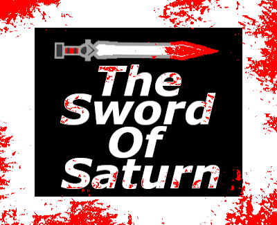
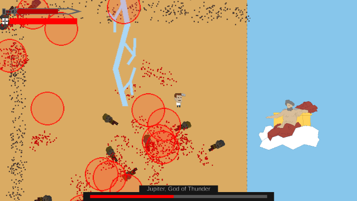
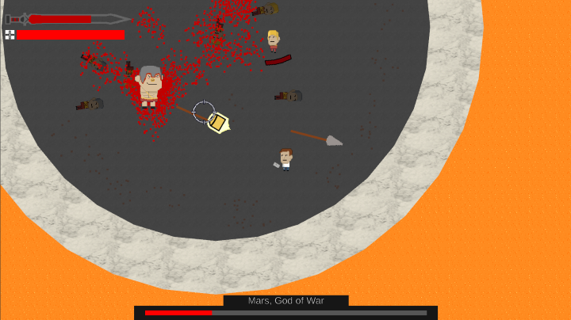
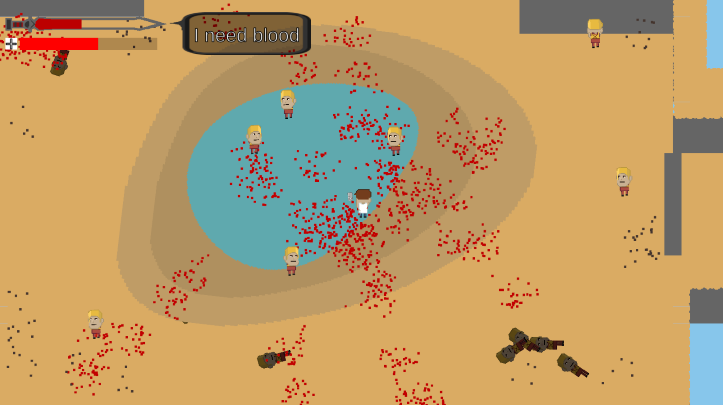

While on a nice hike through the forest, you found an ancient sword. The sword contained the soul of the God Saturn, who was trapped in it by his children. Now, Saturn demands blood and revenge against his son Jupiter, and you're going to help him get it.
Controls:
Left mouse to shoot.
Right mouse to stab.
Space to dodge.
Q to heal using blood.
E to toggle time warp (uses blood while active).
R to activate blood rage.


